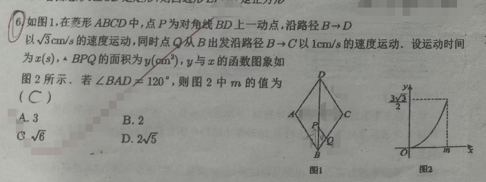

📷 点击查看原图
如图 1，在菱形 中，点 为对角线 上一动点，沿路径 以 的速度运动；同时点 从 出发沿路径 以 的速度运动。设运动时间为 ， 的面积为 ， 与 的函数图象如图 2 所示。若 ，则图 2 中 的值为（ ）
A. B. C. D.
| 知识点 | 说明 |
|---|---|
| 菱形性质 | 对角线互相垂直平分，对角线平分对角 |
| 三角形面积 | （底×高÷2，最基础的面积公式） |
| 含 角的直角三角形 | 角所对直角边 斜边（可由等边三角形 + 勾股定理证明，属几何知识而非三角函数） |
| 动点问题 | 分段函数，图象反映运动过程 |
| 图象解读 | 起点、终点、最大值、关键转折点 |
已知 ，菱形邻角互补，所以 。
点 在 上、点 在 上，因此 。
过 作 ，垂足为 ，则 就是 中边 上的高。
在 中，，根据含 角的直角三角形性质（即 角所对的直角边等于斜边的一半；该结论可由等边三角形 + 勾股定理证明，属于几何知识而非三角函数）：
运动 秒后：，，于是
图 2 中 与 是开口向上的抛物线，最大面积 在 处取得，代入函数式：
因为运动时间 ，所以 。
💡 说明：图象在 处终止，是因为动点 恰好走完对角线 全程；但求 的值时，只需用面积函数的最大值即可直接算出，不必先求菱形边长，整个过程没有用到任何 sin、cos、tan。
📌 来源：江西中考「动点与面积函数」真题（2023江西中考 p23 动点正方形面积、南昌东湖区卷 菱形动点面积函数，见 51jiaoxi.com/doc-15521910.html、www.51jiaoxi.com/doc-17433416.html）
题1：等边三角形 的边长为 。点 从 沿 以 向 运动，同时点 从 沿 以 向 运动，设运动时间为 ， 的面积为 。求 与 的函数关系式，并求 时的面积。📄 查看详细解答 →
题2：菱形 中 ，点 在对角线 上以 从 向 运动，同时点 在 上以 从 向 运动，设时间为 ，。求 与 的函数关系式。📄 查看详细解答 →
题3：矩形 中 ，，点 在 上以 从 向 运动，点 在 上以 从 向 运动，设时间为 ，。求 与 的函数关系式及面积的最大值。📄 查看详细解答 →
📌 来源：与 p16「几何动点·面积函数图象·纯几何底×高÷2」同主题的进阶练习